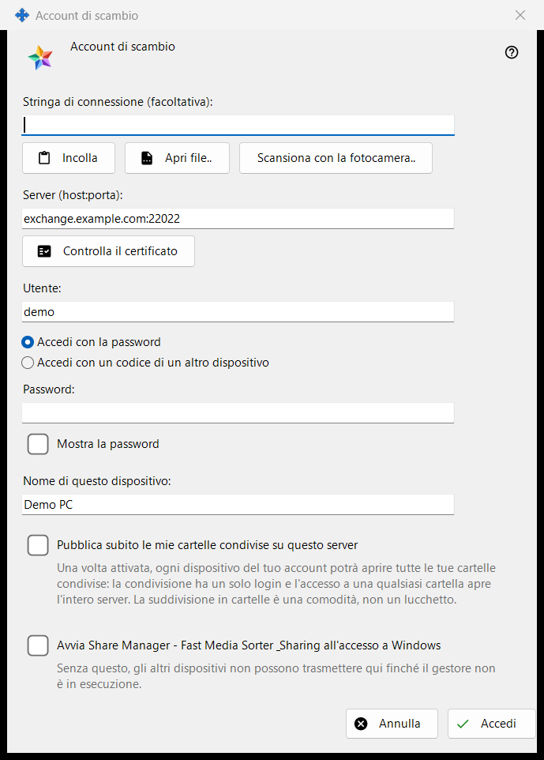
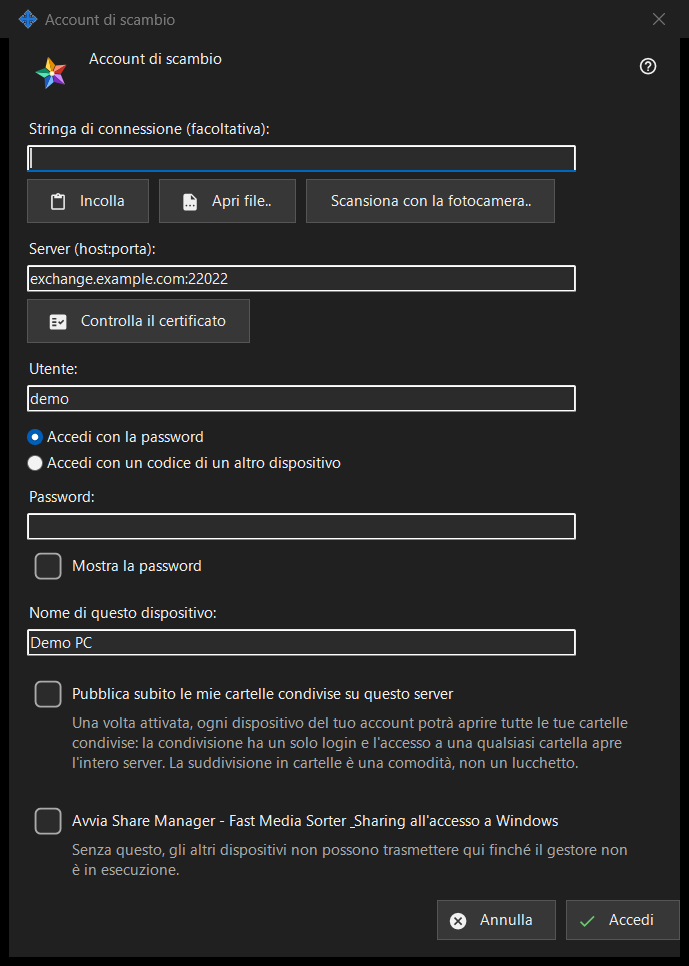

Account di scambio
Scopo
Fa accedere questo PC come dispositivo di un account su un Media Exchange Server. Si apre dal pulsante «Accedi..» nella pagina Account di scambio delle impostazioni di Share Manager e da «Pubblica tramite un server di scambio..», che lo apre con l'opzione di pubblicazione già spuntata.


In questo ordine
- Se vuoi, incolla, apri o scansiona una stringa di connessione: compila il server e il login.
- Premi «Controlla il certificato»; se il sistema non lo considera attendibile e la stringa non lo conteneva, confronta l'impronta con quella dell'operatore e premi «Considera attendibile questo certificato».
- Inserisci il login e la password oppure il codice di abbinamento.
- Imposta il nome del dispositivo e le opzioni.
- Premi «Accedi».
Gli elementi
Stringa di connessione
«Stringa di connessione (facoltativa):» accetta una stringa che incolli con «Incolla», carichi da un file .fmsexch o da un'immagine QR con «Apri file..» oppure leggi con «Scansiona con la fotocamera..». Compila solo il server e il login; nulla si collega finché non premi «Accedi». Una stringa con un'impronta fissa quel certificato, quindi non c'è nulla da confrontare a mano. Una stringa con un invito porta la finestra alla registrazione. Una stringa inutilizzabile riceve un rifiuto di una riga.
Server e certificato
«Controlla il certificato» si collega a «Server (host:porta):» e mostra «Impronta del certificato del server:». Se il sistema considera attendibile il certificato, non serve fissare nulla. Altrimenti confronta l'impronta con quella che ti ha dato l'operatore del server e premi «Considera attendibile questo certificato»; solo questo pulsante accetta un certificato che il sistema non conosce. Cambiare il testo del server fa dimenticare il controllo. Invio non fa nulla finché un certificato non è considerato attendibile, così nessuna password arriva a un server che nessuno ha garantito.
Login, password e codice di abbinamento
Inserisci «Utente:» e scegli «Accedi con la password» («Password:», con «Mostra la password») oppure «Accedi con un codice di un altro dispositivo» («Codice di abbinamento:», emesso da un altro dispositivo dello stesso account). Il campo viene svuotato nel momento in cui il suo valore viene inviato, qualunque sia l'esito; il dispositivo conserva solo un token, mai la password.
Registrazione tramite invito
Quando la stringa contiene un invito, le due scelte di accesso lasciano il posto alla registrazione: «La password dell'account:» e «Password di nuovo:» impostano la nuova password, che deve rispettare la regola mostrata (almeno 10 caratteri con una lettera latina maiuscola, una minuscola e una cifra), e il pulsante diventa «Crea l'account».
Nome del dispositivo e opzioni
«Nome di questo dispositivo:» (fino a 64 caratteri) parte dal nome del computer. «Pubblica subito le mie cartelle condivise su questo server» è disattivata, a meno che la finestra non sia stata aperta da «Pubblica tramite un server di scambio..»; una volta attivata, ogni dispositivo del tuo account può aprire tutte le tue cartelle condivise, perché la condivisione ha un solo login. L'ultima opzione avvia Share Manager quando accedi a Windows (disattivata per impostazione predefinita), così gli altri dispositivi possono trasmettere a questo PC.
Un server alla volta
Un dispositivo appartiene a un solo server. Accedere a un altro server chiede se lasciare quello attuale, e la pubblicazione sul vecchio server si interrompe. Dopo un contatto non riuscito, il pulsante «Perché non si connette?..» apre il test di connessione.
Impostazioni del gestore · Impostazioni condivisione SFTP · Impostazioni server di scambio